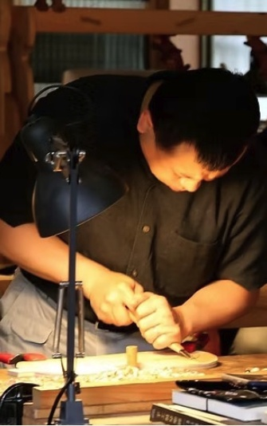
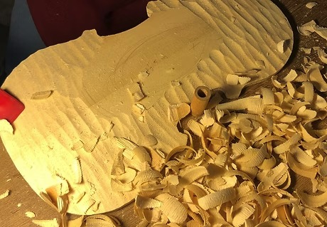

2019.01.20 · 第十次上課
面板內側，逐步挖到定位
挖面板的裏層，先挖到平均厚度約 6 mm 之後開孔，再繼續挖到定位。原筆記還記錄以 100 號砂紙處理，之後再用刮片刮到發亮。
ALEX LIN / VIOLIN MAKING JOURNAL
一刀一刨，記下手作小提琴的日子。
從 2018 年的第一次相遇開始，
分享製琴路上的學習、觀察與樂趣。
製琴紀錄 · 科學與美學 · 同好交流

2018 年 4 月 — 12 月 / 從相遇到背板內側挖削
2018.04.22
有一天，想找一些下班後可以做的休閒活動，FB 上突然出現《手工製琴聖經》這本書。好奇之餘，到誠品參加了製琴師威廉老師的新書發表會，買了書，也請老師簽名，就這樣開啟了我的製琴之路。
2018.07.15 · 第一次上課
第一次上課，老師已經把材料和工具都準備好了！切下來的部分也要保留，將來修理時可能會用到。
第一次上課 · 外拱粗雕
原筆記寫著「面板的最高點，厚度大約是 16.5 mm，這邊先不要挖，其他的部分就按照模型尺寸挖下去」。

原筆記：「一開始可以挖多一點。」
這是粗雕階段的課堂記錄；接近目標曲面時，仍須減少切削量，逐步檢查。
2018.08.05 · 第二次上課
繼續雕削面板和背板；完成內模，貼上角木。課堂手繪留下了曲線與尺寸，也留下當時理解工序的方式。
第二次上課 · 背板
背板記錄為「15.5」。當時最直接的感受是：楓木比雲杉難削得多。
第二次上課 · 內模與角木
內模完成後，貼上角木，開始為側板建立定位。
2018.09.02 · 第三次上課
這次的工作是彎側板、貼角木，並修整接合處。原截圖日期為「9 月 2 日」，年份依前後課程順序整理為 2018 年。
第三次上課 · 膠合與檢查
上膠、夾緊，再以模板比對輪廓。每一步都讓原本分開的木料，逐漸接近一把琴的形狀。
2018.09.16 · 第四次上課
這次練習如何貼上襯條，讓細長的木條沿著琴身曲線就位。
2018.10.07 · 第五次上課
側板、角木與襯條逐步組合完成，原本平直的材料，終於成為能辨識的小提琴外框。
第五次上課 · 定位
原筆記：「夾好以後用 1.5 mm 的鑽尾開洞給定位釘。」
2018.11.04 · 第六次上課
課堂記錄了挖鑲線溝槽所用的道具，為沿著琴板邊緣畫出規整線條做準備。
第六次上課 · 沿邊畫線
原筆記：「沿著邊，小心劃線。」從輪廓走向細節，注意力也集中到刀尖與木紋之間。
第六次上課 · 一天的成果
照片旁留下這句話：「這個整整挖了一天～」看似細細的一圈線，背後是一整天的專注與耐心。
2018.12.02 · 第七次上課
將鑲線用膠黏好，也開始用線鋸機切出琴頭的大致形狀。從琴身的細節，走向琴頭的雕刻。
第七次上課 · 鑲線轉角
原筆記：「這裡最難，這也是評分的重點。」尖角的接合與線條延伸，是當時課堂特別提醒的細節。
第七次上課 · 琴頭粗切
原筆記：「這部分可以先用線鋸機，粗切出來再用手工雕刻。」紙樣把琴頭的側面輪廓，帶到木料上。
第八、九課 / 曲面修整與定位
2018.12.23 · 第八次上課
這次的課堂主題是「鑲線整平」。用小刨一點一點修去凸出的部分，讓鑲線與周圍木面銜接。
2018.12.30 · 第九次上課
面板上先畫好 f 孔的位置，同時繼續將背板挖到定位。從紙樣轉印到木面，先確認線條，再安排後續加工。
第九次上課 · 背板內側挖削
原筆記：「先挖一條長方形的溝。」照片留下背板內側逐步去料的階段，也保留了工作前畫下的分區線。
2019 年 / 低音樑、合琴與配漆
2019.01.20 · 第十次上課
挖面板的裏層，先挖到平均厚度約 6 mm 之後開孔，再繼續挖到定位。原筆記還記錄以 100 號砂紙處理，之後再用刮片刮到發亮。
f 孔工序 · 課次與日期待補
原筆記：「F 孔的外側要挖下去，這是重點！」這句話記錄了當時課堂對局部曲面修整的提醒。
f 孔工序 · 階段成果
上一階段畫在面板上的 f 孔，已經切開。照片保留了當時的孔形與邊緣，作為後續細修的比較。
2019.02.16 · 第十一次上課
這次課堂主題是「貼上低音樑」。照片留下木條修整與面板定位的過程；原網站另有「手工製琴上課花絮 vol.3 低音樑」影片按鈕，連結待補。
2019.02.23 · 第十二次上課
原筆記的主題是「琴頭雕刻」。照片保留旋渦輪廓與孔位圖樣，搭配後續粗胚照片，看見從平面線條走向木雕的過程。
第十二次上課 · 琴頭雕刻
先穩定固定琴頸粗胚，再沿著保留的線條逐步去料。原筆記在夾持照片旁寫著：「這樣才夾得緊。」
2019.03.24 · 第十三次上課
原筆記：「拆側板，合琴貼背板。」側板組件脫離內模後，與背板對合，沿著琴身周邊上夾具膠合。
2019 年 3 月 · 第一把琴
背板內寫下「Anna」、製作者姓名、「No.1」與「Taiwan 2019 March」。這把琴在成為樂器之前，已先有了要送給的人。
2019.03.31 · 第十四次上課
配製小提琴的塗漆，包括底漆、面漆與有色面漆。原筆記記錄：當天先配好，放置一段時間，後來到 6 月 1 日才取出過濾完成。
第十四次上課 · 配漆過程
原截圖標示「隔水加熱三小時」，另以「製琴師的秘密配方」形容瓶中的材料。這些畫面記下了課堂配漆的過程。
2019 年 3–4 月 / 第 14–16 課
2019.03.31 · 第十四次上課
原筆記：「終於完成琴頭雕刻，跟老師刻的擺在一起拍一張。」兩支琴頭並列，記下從粗胚到旋渦完成的成果。
2019.04.21 · 第十五次上課
這次完成指板與琴頭、琴頸組件的黏合工程。原筆記預計下週完成白琴，之後便可準備上漆。
2019.04.28 · 第十六次上課
合琴以後，用雷射光確認中心線。原筆記寫著：「看起來不錯！」當時白琴重量記錄為 368 克，預計上漆後再秤一次。
原截圖標題寫作「貼上琴板」，照片呈現指板與琴頸部位，這裡依工序整理為「貼上指板」。
MEASUREMENT / 2019.04.28
上漆前的課堂重量紀錄。上漆後重量與當次秤重包含的配件明細，留待後續補充。
2019.06.01 / 第 17 課與底漆
合琴後 · 中心線檢查
原筆記：「用雷射前後校準中心線。」前一張記錄琴的正面，這張補上背面的檢查畫面。
2019.06.01 · 第十七次上課
老師介紹兩把仿名琴的結構差異：左側為仿史特拉迪瓦里，右側為仿瓜奈里，然後聽聽音色差異。中間是我尚未上漆的琴。
第十七次上課 · 底漆
原筆記：「使用紅寶蟲膠的酒精溶液當作底漆，塗了三層。」照片記錄刷塗時，背板虎紋在表面色澤中逐漸清楚的模樣。
VIDEO / 作者提供
2019 年 6–8 月 / 第 18–20 課
第十七次上課 · 面板底漆
面板上的刷塗過程，補足前一張背板底漆照片。照片中的深淺差異記錄了施工中的當下。
2019.06.15 · 第十八次上課
老師講解黃漆、紅漆的製備方法與特性，再讓大家選色上漆。原筆記記錄：蟲膠底漆三次、乾燥後以 180 號砂紙打磨；透明漆十六層後，以 220 號砂紙打磨，再進入紅色漆階段。
第十八次上課 · 色漆試色
原筆記列出：「金黃色：巴西蘇木；紅色：小葉紫檀。」照片留下將色液刷到試片上的過程。
色漆紀錄 · 作者補充
小葉紫檀乙醇萃取液當作紅色漆，這是塗了五層以後的顏色。面板與背板並列，留下當時色澤與木紋的整體印象。
2019.07.28 · 第十九次上課
這次課堂主題是「選音柱、削音柱、放音柱以及調整」。照片記下音柱木料與 f 孔旁的操作過程。
第二十次上課 / 照片與現場影片
從琴橋粗胚的標線、細部修削，到弦軸孔加工與上弦後的檢查，記下第一把琴最後的組裝過程。
琴橋與組合上弦 / 工序 01
琴橋粗胚與金屬弧度樣板並列，留下當時的標線與尺寸筆記。
琴橋與組合上弦 / 工序 02
以刀具逐步修整琴橋開口與邊緣，從粗胚走向較細緻的形狀。
琴橋與組合上弦 / 工序 03
使用帶有橫向握柄的錐形鉸刀，修整弦軸孔。
琴橋與組合上弦 / 工序 04
工作桌上排開數支細銼刀，刻有 1、0.8、0.6、0.4 等標記。
琴橋與組合上弦 / 工序 05
以弧度樣板在琴弦附近比對，觀察弦列與琴橋曲線的關係。
WORKSHOP FILMS
四段課堂原始短片，保留現場聲音。點選播放，可使用播放器開啟全螢幕。
NO. 1 / ANNA
從 2018 年第一次走進製琴課，到 2019 年的琴橋與組合上弦，
一刀一刨，終於能把自己的第一把小提琴拿在手裡。
這把琴，要送給安娜。
KEEP LEARNING
這是個人的學習筆記。照片與原始紀錄來自林震煌提供的舊網站截圖；製琴知識為後續補充。2018 年課程中未標年份的日期依前後紀錄暫列；2019 年第 13、14 課的年份依第 11 課與背板題記整理。第 10、12 課已依後續提供的截圖補入日期與內容。尺寸保留當時記錄，尚未確認的量測基準已於文中註明。
01 / 作者提供的參考影片側板彎製的技巧 ↗原截圖標示：林殿崴老師手工製琴課程；影片內容尚未逐段核對。02 / 製琴師的工序介紹David Gusset · The Process of Violin Making ↗補充外拱雕削、小刨、內模與側板彎製的參考。03 / 鑲線與轉角Derek Roberts · Purfling ↗製琴師對鑲線及 bee-sting 尖角的製作說明。04 / f 孔修整與低音樑Michael Darnton · Making a Viola ↗製琴師的中提琴實作紀錄：孔形、拱形、板厚與低音樑貼合，作為工序概念參考。